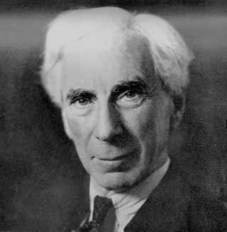
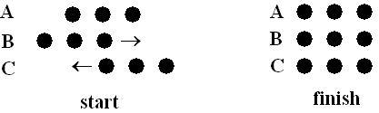

Zeno versus Russel
Russell zet in hoofdstuk 6 van Our knowledge of the external world uiteen hoe Zeno’s paradoxen opgelost kunnen worden. De paradoxen ontstaan volgens Russell doordat filosofen het begrip oneindigheid niet goed begrepen hebben.
1. De Paradox van Zeno
In de tekst van Russell wordt de 1e paradox van Zeno samengevat:
"You cannot get to the end of a race-course. You cannot traverse an infinite number of points in a finite time. You must traverse the half of any given distance before you traverse the whole, and the half of that again before you can traverse it. This goes on ad infinitum, so that there are an infinite number of points in any given space, and you cannot touch an infinite number one by one in a finite time."
Als de hardloper alle punten een voor een moet raken dan is hij oneindig lang bezig omdat de afstand oneindig gedeeld kan worden. Volgens Russell hoeft de hardloper niet elk punt een voor een te raken. De hardloper kan van een bepaald punt naar het volgende punt rennen in een continue beweging zonder dat hij elk punt dat er tussenin zit hoeft te raken. Hij hoeft niet te stoppen bij elk tussenliggend punt en een milliseconde te wachten om verder te gaan.
De punten die ontstaan door de afstanden te halveren zijn oneindig. De afstand tussen twee punten kunnen een eindige tijd later worden bereikt dan het voorafgaande punt. Zeno denkt dat door oneindig maal eindige tijden bij elkaar op te tellen een oneindig getal ontstaat. Dit blijkt geen voldoende argument te zijn voor deze paradox.
Als iemand de hele afstand in 1 minuut aflegt, dan doet hij over de helft: ½ minuut, en over een kwart: ¼ minuut, enz. 1/8, 1/16, 1/32. De volgende reeks ontstaat dan van de afstand die wordt afgelegd: 1/2, 3/4, 7/8, 15/16, . . . Zeno heeft gelijk als hij aanneemt dat dit een oneindige reeks is. De fout die Zeno maakt is dat hij denkt dat er niets voorbij een oneindige reeks kan gaan. Dit geval laat zien dat het wel zo is, als de reeks opgeteld zou worden dan zou deze onder de 1 minuut uitkomen, 1 ligt dus voorbij deze reeks. De renner kan in een eindige tijd van 1 minuut een oneindig aantal momenten en punten passeren.
2. De paradox van Achilles
De paradox van Achilles en de schildpad wordt zo omschreven:
“Achilles will never overtake the tortoise. He must first reach the place from which the tortoise started.
By that time the tortoise will have got some way ahead. Achilles must then make up that, and again the tortoise
will be ahead. He is always coming nearer, but he never makes up to it.”
Dit argument is eigenlijk dezelfde als de vorige. Als Achilles de schildpad in zou halen dan heeft hij een afstand afgelegd die in een oneindig aantal momenten verdeeld is. Dat is waar. Alleen als wij deze oneindige reeks van momenten bij elkaar optellen dan is dat geen oneindig lange tijd. Stel dat Achilles na 1 minuut de plek bereikt waarop de schildpad zijn voorsprong heeft opgebouwd, dan is de schildpad weer verder, dan bereikt Achilles dit punt bijvoorbeeld in een halve minuut, en het volgende in een kwart, en dan 1/8,16, 32,64. Deze reeks is oneindig maar komt opgeteld niet boven de 2 uit. Wij weten daarom dat Achilles de schildpad bij 2 minuten al ingehaald heeft. 
3. Pijl paradox
Russell geeft de paradox van de pijl, en daarna een betere vertaling daarvan.
“The arrow in flight is at rest. For, if everything is at rest when it occupies a space equal to itself,
and what is in flight at any given moment always occupies a space equal to itself, it cannot move.”
But according to Prantl, the literal translation of the unemended text of Aristotle’s statement of
the argument is as follows: “If everything, when it is behaving in a uniform manner, is continually
either moving or at rest, but what is moving is always in the now, then the moving arrow is motionless.”.
Wij vooronderstellen dat er een volgende positie in het volgende moment bezet is. Russell herinnert ons eraan dat er juist geen volgende positie in het volgende moment bezet is. De pijl van dit moment botst dus niet op de pijl uit het volgende moment. De pijl op ieder punt heeft snelheid en staat niet stil. Wij kunnen in theorie een ultra kort moment kiezen waarop wij de pijl observeren, maar ook in dit ultra korte moment legt de pijl een ultra korte afstand af. Het is niet nodig om ervan uit te gaan dat als wij een moment nemen van de pijl in vlucht dat de pijl dan stil staat.
4. Paradox van het Stadium
De paradox van het Stadium herformuleert Russell als volgt: Let us suppose three drill-sergeants, A, A', and A'', standing in a row, while the two files of soldiers march past them in opposite directions. At the first moment which we consider, the three men B, B', B'' in one row, and the three men C, C', C'' in the other row, are respectively opposite to A, A', and A''. At the very next moment, each row has moved on, and now B and C'' are opposite A'. Thus B and C'' are opposite each other. When, then, did B pass C'? It must have been somewhere between the two moments which we supposed consecutive, and therefore the two moments cannot really have been consecutive. It follows that there must be other moments between any two given moments, and therefore that there must be an infinite number of moments in any given interval of time.
(Afbeelding bron: http://www.hhofstede.nl/paradoxen/zeno.htm) 
Deze paradox gaat er van uit dat eindige ruimte en tijdsduur uit een eindig aantal punten en momenten bestaan. Russell erkent dat tijd en ruimte bestaan uit punten en momenten. Hij ontsnapt uit deze paradox door te stellen dat elk eindig interval bestaat uit een oneindig aantal punten en momenten.
Als punten eindig zijn dan moeten zij bestaan uit in een reeks opeenvolgende punten zonder punten daar tussen. In dat geval zouden de soldaten van het ene naar het andere punt verspringen. Volgens Russel verspringen de soldaten niet van het ene punt naar het volgende punt maar bewegen in een vloeiende beweging die onder te verdelen is in een oneindig aantal punten en momenten. Op zo een punt dat zich er tussenin bevindt passeert soldaat B soldaat C’.
Russell heeft laten zien dat eindige intervallen oneindig verdeelt kunnen worden. Lange tijd dachten filosofen dat dit niet kon. Een reden hiervoor was dat zij dachten dat oneindig betekent zonder eind. Maar de wiskunde laat zien dat er oneindige reeksen mogelijk zijn die een eind hebben. Daarnaast dachten filosofen dat oneindige reeksen niet mogelijk zijn omdat zij ontelbaar zijn, maar in de wiskunde zijn reeksen te definiëren zonder dat ze geteld moeten worden. De belangrijkste misvatting is dat filosofen dachten dat er niets voorbij een oneindige reeks kon gaan. Russell heeft laten zien dat dit wel kan.
(alle teksten in het Engels zijn citaten van Russell’s Our knowledge of the external world, tenzij anders vermeld, de teksten in het Nederlands zijn voornamelijk parafrasen van Russel’s tekst)
Bergsons metafysica
Bergson zet zijn metafysische methode af tegen de wetenschappelijke methode die het verstand gebruikt. Het verstand heeft in de evolutie vooral een praktisch doel, en kent de wereld daarom in de manier waarop de mens de wereld gebruikt. Het verstand en de wetenschap breken de ruimte op in homogene delen zodat het geanalyseerd en benut kan worden. Datzelfde principe past het verstand ook toe op tijd. Hierdoor kunnen de onderscheidende delen opgemeten worden en geanalyseerd.
De metafysica van Bergsons gebruikt de intuitie als methode. Met de intuitie leert iemand de wereld kennen door te symphatiseren met/in te leven in, de wereld. De intuitie is de basis van het reële. Het verstand (door te herinneren) verdeelt datgene dat wij waarnemen. Het verstand doet dit doet door de ruimte op te meten en te verdelen. Dezelfde methode past het verstand ook toe op tijd hoewel dit eigenlijk niet passend is. Tijd is heterogeen en niet afzonderlijke stukken te verdelen. Het verstand filtert daarmee de waarneming. Intuïtief ervaart iemand de gehele duur zonder de filters van het verstand. De intuitie kan de tijd wel kennen terwijl het verstand dat niet kan.
Tijd is echt
Volgens Bergson is tijd echt. Tijd is voor Bergson: de duur, te vergelijken met een stroom, zoals de stroom van ervaringen die ons bewustzijn heeft. Tijd is reel omdat het niet weggelaten of aangepast kan worden. Tijd is een continue beweging die niet in stukken verdeeld of vermenigvuldigd kan worden zonder van karakter te veranderen. Als een melodie op dubbele snelheid wordt afgespeeld wordt het iets anders. Het heeft de tijd nodig om die specifieke melodie te zijn. Hetzelfde geldt voor een film die wordt vertraagd, deze krijgt een ander karakter. Of als wij de filmrol uit de projector halen dan blijven alle frames op de filmrol hetzelfde. Maar het is niet dezelfde ervaring als de film die wordt afgespeeld. De ruimtelijke dimensies blijven hetzelfde: de lengte van de filmrol, de maatvoering van vlakken binnen de frames. Alleen doordat wij de reele tijd/de duur niet meer ervaren verandert de aard van de film. Tijd is echt want het is nodig om de film te kennen. Tijd staat los van ruimtelijke stadia die elkaar opvolgen zoals de frames op de film. Kortom ruimte en tijd worden op verschillende manieren gekend.
Tijd leren kennen met metafysica
Tijd is niet te kennen met het gezonde verstand. Het gezonde verstand verdeelt de wereld zoals het de ruimte verdeelt en kent de stroom/ de duur die eronder zit niet. De wetenschap volgt de methode van het gezonde verstand, alleen met het verschil dat zij preciezer de ruimte opmeet. De metafysica zou zich juist van het alledaagse gezonde verstand moeten onttrekken. Volgens Bergson kan de metafisca dan kennis over de duur vergaren met de methode van intuïtie.
De metafysica van de intuïtie geeft direct toegang tot de duur. Alleen door de duur kunnen wij de realiteit kennen volgens Bergson. Wetenschap houdt zich te veel bezig met het extensieve, meetbare en ruimtelijke objecten, maar krijgt hierdoor geen kennis over de duur. Wetenschap heeft daarom de metafysica van de intuitie nodig om toegang te krijgen tot de realiteit. Bergson schrijft dat de wetenschap de duur niet kan kennen omdat zij teveel bezig is met dingen die herhaalbaar en voorspelbaar zijn. Daardoor kan de wetenschap het nieuwe niet kennen.
Harman
Volgens Heidegger zijn wij in de wereld en gebruiken wij gerei als iets vanzelfsprekends. Wij zijn ons niet bewust van het gerei zolang het doet waarvoor wij het willen gebruiken. Er is geen object -subject relatie tussen ons en het gerei, er is geen reflectieve afstand. Wij leven normaalgesproken in de wereld zonder afstand te nemen van het object, wij gaan er vanzelfsprekend mee om zonder kritisch te denken. Als het gerei hapert, stukgaat of storingen optreden worden wij ons bewust van het gerei als ding.
Wij zien alles als een gerei, iets dat bedoeld is “om te”, dus om ons te dienen. De vloer is om op te staan, de lucht is om in te ademen. Harman wijst erop dat het gerei van Heidegger veel meer is dan hamers en treinperrons, de gerei-analyse kan op alle substanties worden toegepast, niet alleen op wat wij normaal als dingen zien maar ook op ideeën of de vloer.
Wij worden ons pas bewust van het gerei als het stukgaat. Op dit negatieve moment ontstaat het bewustzijn bij Heidegger. Pas als iets het niet meer doet dan onthult het zich aan ons. Volgens Harman zien wij dan maar een beperkt aantal perspectieven van het ding ook als het stuk gaat. Wij zien dingen alleen maar “om te”, wij zien het alleen als iets dat een functie heeft voor ons. En ook als het stuk gaat, dan zien wij datgene dat wij missen, het apparaat dat niet in staat is om X te doen. Hierdoor zien wij nog steeds maar een klein deel van het ding, wij ervaren het alleen door de bril van om te. En voor ieder mens en dier heeft het ding een andere functie en een andere om te. Als het gerei stuk gaat en wij worden ons bewust van het ding dan worden wij ons alleen van een klein deel van het ding bewust. Wij worden ons dan bewust van het deel dat wij missen voor de functie die het vervult, het om te. Op het moment dat wij ons bewust worden van iets, als wij theoretiseren dan nog doen wij dat vanuit de praktijk. Onze theorie is gebaseerd op dat wij in het gerei iets missen om X te doen.
Het praktische gebruiken van het gerei verklaart de dingen niet, ook wanneer wij gaan denken doordat de dingen stukgaan verklaart de dingen niet. Er is realiteit nodig om praktijk en theorie van de dingen mogelijk te maken. Het ding kan niet gereduceerd worden tot de relaties en kwaliteiten die ontstaan in praktijkgebruik en theorie. Deze relaties en kwaliteiten zijn perspectieven die gebaseerd zijn op het gebruik van het ding.
Het ding dat niet gereduceerd is tot gerei-perspectieven noemt Harman substantie. Het functionele gaat niet vooraf aan het ding, de substantie van het ding gaat aan het ding vooraf. Objecten zijn meer dan de gebruiksmogelijkheden die wij zien.
Het gaat Harman niet om het verschil tussen het gerei bewust of onbewust te gebruiken. Dat is te antropocentrisch. Dit beschrijft alleen de relatie tussen de menselijke geest en de omgeving. Volgens Harman moet de filosofie kijken tussen de relaties tussen alle substanties. Alle substanties zijn even raadselachtig en staan in relatie met elkaar. Wat een object is weet Harman niet, maar hij denkt dat objecten onuitputtelijke niet uitgebrachte kwaliteiten bezitten. Deze kwaliteit kennen wij nog niet, substantie is de ongekende realiteit van dingen. Substantie kunnen volgens Harman ook bestaan uit ideeën.
Substanties zijn autonoom en bestaan onafhankelijk van relaties. Twee substanties kunnen nooit met elkaar in contact staan. Zij kunnen wel interacteren door vicarious causes (bemiddelde oorzaken). Als alle objecten met elkaar interacteren dan betekent dit dat alle dingen elkaar kunnen interpreteren: Harman’s filosofie leidt hiermee tot pan-hermeneutiek.